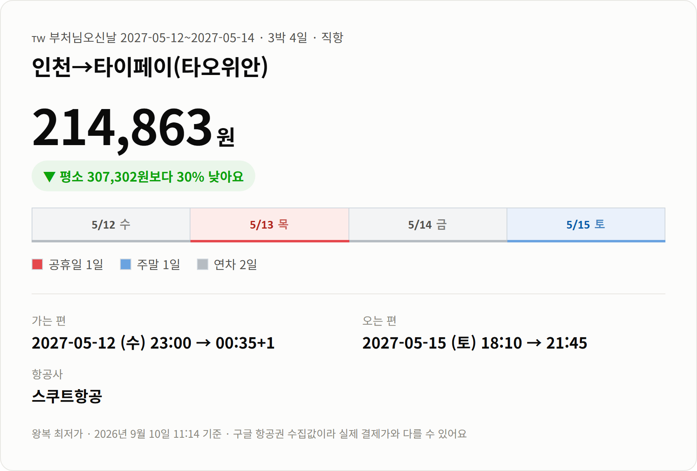
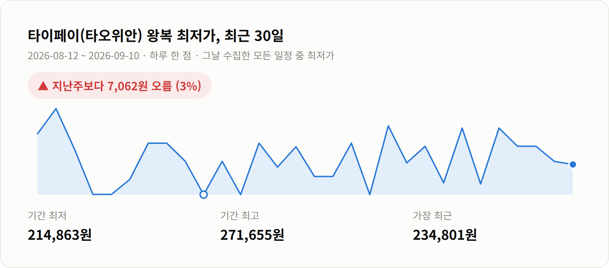

안녕하세요 :)
오늘은 좀 멀리 보는 이야기예요.
내년 5월 부처님오신날 연휴인데, 벌써 가격이 내려와 있더라고요.
연휴가 코앞이면 싼 자리는 이미 빠져 있어요.
그래서 이렇게 한참 남았을 때가 오히려 잡기 좋아요.
직항 왕복 214,863원이에요.
이 연휴 통상 시세가 307,302원이니까
9만원 넘게 빠진 값이고요.

가는 편: 5/12(수) 23:00 → 00:35+1 도착
오는 편: 5/15(토) 18:10 → 21:45 도착
운항: 스쿠트항공 직항
일정: 3박 4일
밤 11시에 떠서 자정 넘어 도착하는 편이에요.
퇴근하고 공항으로 가도 되는 대신
첫날 밤은 이동으로 지나간다고 보시는 게 맞아요.
돌아오는 편이 토요일 저녁이라
일요일 하루를 통으로 쉬고 출근할 수 있어요.
스쿠트항공은 저비용항공사예요.
수하물이랑 기내식이 따로 붙으니 결제 전에 총액을 확인해보세요.
[사진 자리] 타이페이 지우펀 골목 야경
5/13 목요일이 부처님오신날이고 5/15 토요일이 주말이에요.
가는 날인 5/12 수요일과 5/14 금요일,
이렇게 이틀만 내면 3박 4일이 됩니다.

한 달 최저가가 214,863원인데 지금이 딱 그 값이에요.
다만 최근 일주일은 221,925원으로 3% 올랐어요.
더 내려가길 기다릴 구간은 아닌 것 같아요.
[사진 자리] 타이페이 야시장 먹거리
타이페이는 밤에 걸어 다니는 도시예요.
야시장이 동네마다 하나씩 있어서
저녁만 되면 사람이 골목으로 쏟아져 나와요.
[사진 자리] 예류 해안 기암
시내에서 한 시간이면 바다도 나와요.
지우펀은 산비탈에 붙은 찻집 골목이고,
예류는 파도가 깎아 놓은 바위들이 늘어선 해안이에요.
둘 다 반나절이면 다녀올 수 있어요.
5월 타이페이는 낮 최고가 29도쯤이고
습도가 77%까지 올라가요.
그리고 이 시기는 우기예요.
한 번씩 쏟아지고 그치는 식이라
접이 우산 하나면 대개 넘어갑니다.
한국 여권은 90일까지 무비자예요.
출발 전에 외교부 해외안전여행 사이트에서 한 번만 더 확인하세요.
[사진 자리] 타이페이 시내 전경
가격은 2026년 9월 9일 07:36 기준이에요.
구글 항공권에서 모은 값이라 실시간이 아니고,
실제 결제하실 때는 달라질 수 있어요.
다른 노선이랑 연휴별 가격은 여기에 정리해두고 있어요.
읽어주셔서 감사합니다 :)